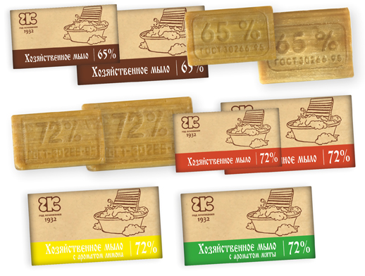

Полезно знать
-
Во многих торговых объектах до сих пор можно увидеть куски коричневого цвета хозяйственного мыла.
Для чего нам хозяйственное мыло, в чем его положительные качества и недостатки? Что за цифры выбиты на «теле» мыла? Что означают цифры на куске мыла?
Отвечаем, цифры 72%, 70%, 65% — это процент содержания жирных кислот.
Чем больше цифра на куске хозяйственного мыла, тем лучше оно справляется с грязью и инфекцией.
ПЛЮСЫ — В действительности хозяйственное мыло имеет ряд свойств, не присущих другим моющим средствам.
Первый плюс хозяйственного мыла в том, что продукт изготовлен только из натуральных и экологически чистых материалов, растительных масел и животных жиров, мыло гипоаллергенно и совершенно безвредно для организма человека.
Данный продукт часто рекомендуют использовать для стирки одежды и постельного белья маленьких детей. После стирки, мыльной водой вы даже можете поливать свои домашние растения, вода не нанесет им вреда, потому как в мыле отсутствую химикаты.
Хозяйственное мыло – незаменимый помощник для дачника. Используйте его для чистки любых поверхностей и утвари.
Так же хозяйственное мыло благоприятно влияет на качества некоторых тканей, например, шерсти. После стирки шерстяных изделий хозяйственным мылом они приобретают пышность и изначальную мягкость.Это простое, всем известное хозяйственное мыло. Хозяйственное мыло успешно применяется для лечения воспалительных процессов (вплоть до начинающейся гангрены). Хозяйственным мылом успешно лечат даже гинекологические заболевания (в некоторых роддомах его используют для мытья пола в отделениях, где находятся новорожденные). Хирурги знают об удивительной способности хозяйственного мыла заменять хирургические перчатки (если его намылить на руки и оставить подсыхать) – говорят, что тогда даже при порезе во время операции риск заражения минимален.
Хозяйственное мыло является и противовирусным средством. И с этим назначением с успехом применяется в интимной сфере для профилактики различных заболеваний.
Моя голову хозяйственным мылом, можно добиться того, что волосы становятся густыми и здоровыми (исчезает и перхоть, и ломкость волос). Правда, чтобы кожа головы не была после такого мытья пересушена, нужно все же затем ополоснуть голову кислым раствором на основе уксуса или лимонного сока.
Хозяйственным мылом советуют умываться – хотя бы 2 раза в неделю – для того, чтобы кожа всегда молодо выглядела. После умывания надо смазывать кожу обыкновенным детским кремом. Причем эффект от таких умываний, как говорят те, кто попробовал, лучше, чем от использования дорогой профессиональной косметики.
Очень хорошо очищает кожу мытье в парной с березовым веником, замоченным в растворе хозяйственного мыла: кожа замечательно очищается и потом как бы светится изнутри.
Можно излечиться с помощью хозяйственного мыла от начинающегося насморка. Нужно сделать мыльный раствор, обмакнуть туда ватный тампон и обработать носовые пазухи. Тогда (хотя и будет первое время немного щипать) нос никогда не будет заложен, а через 2-3 такие обработки вы надолго забудете о простуде.
При укусе собаки для предотвращения попадания в рану инфекции советуют дать стечь крови из раны (она вымоет и бактерии), а потом или приложить марлю или забинтовать бинтом, смоченным в растворе хозяйственного мыла.
Успешно справляется хозяйственное мыло и с лечением грибковых заболеваний стоп. Советуют тщательно мыть пораженные области на коже мылом со щеткой, после чего обрабатывать поверхность кожи йодом.
После депиляции, чтобы исключить покраснение кожи на чувствительных участках, люди также используют хозяйственное мыло. Достаточно просто один раз намылиться и раздражения не будет.
Если имеются какие-либо проблемы в ротовой полости, можно обрабатывать зубную щетку раствором хозяйственного мыла и оставлять на ночь. К утру вы будете уверены, что ваша зубная щетка полностью обеззаражена.
В хозяйственном мыле много щелочей, быстро и качественно растворяющих грязь и к тому же обладающих антимикробным действием. Недаром в медицине грубое хозяйственное мыло до сих пор используют в качестве антисептика.
Для молодых ребят которые служат в армии лечат грибок на ногах хозяйственным мылом. Просто на протяжении 1 недели утром и вечером моешь ноги в холодной воде с хозяйственным мылом и грибка как не бывало!
Хозяйственное мыло – прекрасное средство для снятия отёка. Для этого достаточно развести мыло в воде и натереть полученным раствором ушиб. Производить процедуру необходимо несколько раз за день.
Средство от прыщей. Натереть хозяйственное мыло в мисочку, добавить воды и взбить его помазком в пену. Теперь взять 1 ст. л. получившейся пены, 1 ч. л. соли «экстра» и перемешать. Эту смесь накладывать на хорошо вымытое лицо. Предупреждаю — будет сильно щипать, но это как раз и означает, что идет лечебный процесс. Держать маску полчаса. У вас на лице останется сухая соль, смахните ее и умойтесь сначала горячей, а потом холодной водой. Делать такую процедуру нужно 2-3 раза в день в течение 2-3 недель.
Средство от нарывов. Смешать в равных частях натертый лук, хозяйственное мыло и сахар. Эту мазь наложить на нарыв и забинтовать. Делать это нужно на ночь, утром вы увидите, что рана полностью очистилась.
От трещин на пятках и натоптышей делают ванночку из 2 литров горячей воды, 1 чайной ложки соды и 1 столовой ложки наструганного хозяйственного мыла.
Если ушибленное место помазать хозяйственным мылом — синяка не будет.
Хозяйственное мыло — средство от ожогов. Если вы обожгли руку или что-то еще (на кухне, например, огнем или кипятком), сразу намыльте место ожога хозяйственным мылом и дайте подсохнуть. Не будет не только пузырей от ожога, но и покраснения не останется!
-
Новинка среди текстильных изделий для дома -махровые полотенца из хлопка с добавлением модала. А что такое модал?
-
Спать на красивом постельном белье, что может быть лучше для спокойного, приятного сна.
Даже самое качественное белье требует ухода. Тогда белье прослужит долго, сохранив эстетический вид.
-

С давних времен бамбук использовался для строительства, отделки а также изготовления различных изделий, используемых в быту. В конце 20 века бамбук испытал "второе рождение", поскольку японским ученым удалось создать на его основе новый инновационный материал - бамбуковое волокно, которое стало широко использоваться в текстильной промышленности для изготовления тканей. Сегодня бамбуковая ткань - самый перспективный материал для изготовлния одежды, нижнего белья, подушек, одеял, полотенец и другого трикотажа из бамбука
-

Хозяйственное мыло по своим микробиологическим свойствам самое эффективное из гигиенических средств. Польза хозяйственного мыла известна давно. Ведь этот желто-коричневый кусок мыла способен отмыть не только бактерии, но даже мазут. Это мыло смывает и масляную краску. Особенно это касается мыла хозяйственного в 72% жирности.
Единственным противоаллергенным из экологически чистых продуктов современной химии остается хозяйственное мыло. Состав хозяйственного мыла очень прост. В него входят только жирные кислоты и натриевая соль. И на его основе, вводя химические красители и отдушки, изготавливают другие сорта мыла.